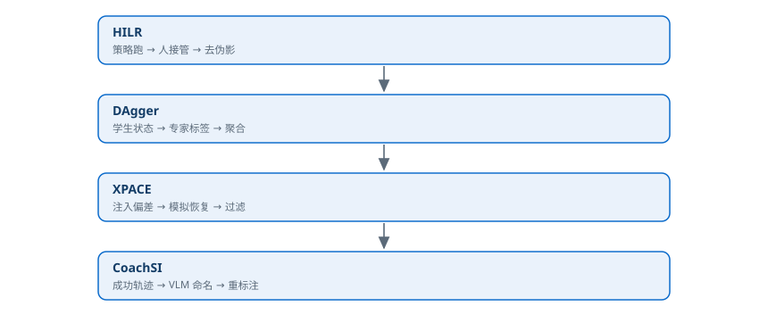

人机接力、学生状态分布、模拟器恢复、语言教练重标注——四类把「执行后果」变成训练数据的做法
闭环训练的第一步是「拿到策略自己会遇到的失败/纠正数据」。本页把四类采集方式放在一起：HILR（人接管）、DAgger（学生状态+专家标签）、XPACE（模拟器恢复）、CoachSI（VLM 命名）。
| 项 | 值 |
|---|---|
| HILR | 人只在快失败时接管；剔除切换伪影（GigaBrain §3.2.2） |
| DAgger | Dataset Aggregation：学生状态 + 专家动作，迭代聚合 |
| XPACE | 注入偏差 + 模拟器推演恢复 + 一致性过滤；恢复数据 ~8% |
| CoachSI | 冻结 VLM 给成功轨迹命名「下一步」，补语义监督 |

物理：四种方式都在回答同一个问题——「策略会在哪里失败、失败后该怎么纠正」。
物理：人机接力：只在边界上采集，样本价值最高。
物理：在线聚合学生访问到的状态与专家动作，解决分布漂移。
物理：在聚合后的状态分布上最大化专家动作似然。
物理：把成功轨迹切成子任务并命名，作为下一步指令监督。
HILR 依 GigaBrain §3.2.2 重建；DAgger 为标准算法（Ross et al., 2011）；XPACE/CoachSI 依论文描述重建。
def hilr_episode(policy, env, human):
# 物理：策略自主跑；人判断快失败就接管
traj, obs, done = [], env.reset(), False
while not done:
a = policy.act(obs); flag = 0
if human.wants_control(obs):
a, flag = human.act(obs), 1
traj.append((obs, a, flag)); obs, done = env.step(a)
return scrub(traj) # 剔除切换边界
def dagger(expert, D, N):
# 物理：学生状态 + 专家标签，聚合重训
pi = train_bc(D)
for i in range(N):
states = rollout_states(pi)
labels = [expert.act(s) for s in states]
D = D + list(zip(states, labels))
pi = train_bc(D)
return pi
def coach_relabel(traj, vlm, task):
# 物理：VLM 把成功轨迹命名成「下一步」
steps = [vlm.describe(seg.frames, task, "next step?") for seg in segment(traj)]
return [(seg.obs, seg.action, s) for seg, s in zip(segment(traj), steps)]返回 方法精读 Wiki 索引 ｜ 博客：VLA/WAM 的 RL 后训练实现版